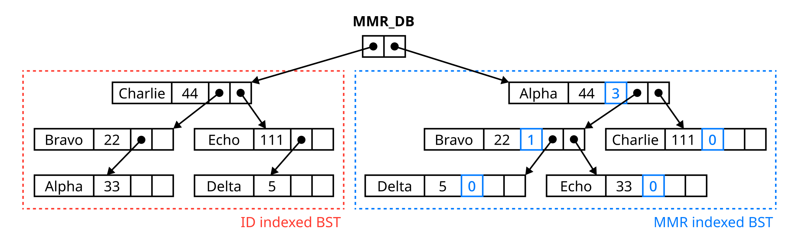

The goal of this assignment is to deepen your understanding of common dictionary implementations using two fundamental data structures in C:
Hash Tables and Binary Search Trees (BSTs). You will learn (1) how each data structure operates, (2) their strengths and weaknesses,
and (3) when and why to choose one over the other. By the end, you’ll have practical experience implementing data structures and analyzing their
efficiency in real-world scenarios.
In online gaming platforms, a player’s skill level is commonly quantified through a Matchmaking Rating (MMR), a numerical measure designed
to ensure balanced and competitive matches. When players search for a match, the system typically pairs them with opponents of similar MMR to
create fair gameplay experiences. Efficiently managing and retrieving MMR data is essential for maintaining competitive integrity, enhancing
user satisfaction, and fostering sustained player engagement.
This assignment requires you to design a simplified Game Ranking System API to support various applications, such as matchmaking programs and ranking dashboards, by managing:
- Player IDs: Unique identifiers for each player (strings).
- MMR Values: Numerical values indicating player skill levels (integers).
You will implement the system twice: first using a Hash Table, then using a BST. Later, you’ll integrate these implementations strategically to leverage their individual strengths.
You'll complete these tasks in order:
- [Task 1] Implementation using a hash table (35 points)
- [Task 2] Implementation using a binary search tree (35 points)
- [Task 3] Integrate both implementations strategically (20 points)
- [Task 4] Clearly document your design choices (10 points)
NOTE: We provide skeleton code and several utilities
(e.g., Makefile and tests)
in assignment3.tar.gz.
Please download it to your directory before starting your project
and check README.md.
Your API must follow the provided mmr_db.h. Do NOT modify this file. The API supports three categories of operations:
- Database Management (Create; Destroy; Register; Unregister; Update)
- MMR Queries (Retrieve MMR by player ID; Count players meeting criteria)
- Rank Queries (Retrieve a player’s rank; Retrieve a player ID by rank)
4.1 Database Management Functions
typedef struct MMR_DB *MMR_DB_T; — MMR_DB_T is an object representing the entire game ranking database, maintaining player records and the total number of players in the database.
|
| Function |
MMR_DB_T CreateMMRDB(void); |
| Objective |
Allocates and initializes a new game ranking database. |
| Return Value |
- On success, returns a pointer to a new
MMR_DB object.
- On failure (e.g., memory allocation failure), returns
NULL.
|
| Function |
void DestroyMMRDB(MMR_DB_T * db); |
| Objective |
Frees all memory associated with the game ranking database and player records. |
| Guideline |
Ensure all allocated memory is freed and avoid dangling pointers. |
| Function |
int RegisterPlayer(MMR_DB_T db, const char *id); |
| Objective |
Adds a new player record to the ranking system with a unique identifier (ID) and an initial MMR value of 0. |
| Return Value |
- On success, returns 0.
- If same ID already exists in the database, returns 1.
- For other failures, returns -1.
|
| Guideline |
Copy the ID string so that the player record owns its own copy. Consider using strdup(). If you use strdup(), please add -D_GNU_SOURCE after gcc209. (e.g., $ gcc209 -D_GNU_SOURCE -o testclient testclient.c) |
| Function |
int UnregisterPlayer(MMR_DB_T db, const char *id); |
| Objective |
Removes the player record with the specified ID from the ranking system. |
| Return Value |
- On success, returns 0.
- If no matching record exists with the given ID, returns 1.
- For other failures, returns -1.
|
| Guideline |
Ensure memory allocated for player record is properly freed. |
| Function |
int UpdatePlayerMMR(MMR_DB_T db, const char *id, int mmr_change); |
| Objective |
Adjust player’s MMR by the specified change. |
| Return Value |
- On success, returns the player’s new MMR.
- On failure, returns -1.
|
| Guideline |
MMR cannot be negative. If addition of mmr_change results in a negative MMR, set the new MMR value to 0. |
4.2 MMR Query Functions
| Function |
int GetMMRByID(MMR_DB_T db, const char *id); |
| Objective |
Retrieves MMR for a specified player. |
| Return Value |
- On success, returns the player’s MMR.
- On failure, returns -1.
|
typedef bool (*MMR_FUNC_T)(const char *id, int mmr); — Function pointer type for iterating over player records. The function should accept a player’s ID and MMR and return a boolean value (true or false).
|
| Function |
int CountPlayers(MMR_DB_T db, MMR_FUNC_T fp); |
| Objective |
Iterates over all player records and counts players matching criteria defined by fp. |
| Return Value |
- On success, returns the number of matching (
fp returns true) players.
- On failure, returns -1.
|
| Guideline |
This function can be used as a helper function for other operations. |
4.3 Rank Query Functions
For easier implementation, you can assume that all users have unique MMR values in all test cases, except during initialization (where MMR = 0). Additionally, the test cases will not include queries for RankByID or IDByRank involving users with an MMR of zero.
| Function |
int GetRankByID(MMR_DB_T db, const char *id); |
| Objective |
Returns the rank of specified player in the database. |
| Return Value |
- On success, returns the rank.
- If the specified ID does not exist in the database, returns 0.
- On failure, returns -1.
|
| Function |
char * GetIDByRank(MMR_DB_T db, int rank); |
| Objective |
Retrieves the player’s ID by rank. |
| Return Value |
- On success, returns the copy of the player’s ID.
- On failure, returns
NULL.
|
| Guideline |
Ensure that the function validates the rank parameter (e.g., rank must be positive and within the total number of players). The function should allocate a new memory block for the copied ID string, which can be freed by the caller. Consider using strdup(). If you use strdup(), please add -D_GNU_SOURCE after gcc209. |
Note: Handle all invalid inputs robustly (e.g., NULL pointers).
Each task will be graded independently. The provided test files will help you validate your implementations and receive feedback. A detailed explanation of the build and test process is provided in the next section.
[Task 1] Implementation Using a Hash Table (35 points)

Requirements
- Implement all functions using a hash table in a file named
mmr_db_ht.c.
- Start with a hash table bucket size of 1024 entries.
- Each new player registration should allocate memory for a new record.
Tips
- Use an appropriate hash function to minimize collisions. You may use the provided hash function included in the skeleton code of
mmr_db_ht.c if desired.
- Avoid memory leaks. For every call to
malloc or calloc, there must be exactly one corresponding call to free when the memory is no longer needed.
- The test cases include scenarios where the number of entries exceeds the bucket size, meaning collisions will occur deterministically. Your implementation must still produce correct outputs regardless of collisions. The hash table diagram shown above is one example of how to handle collisions without compromising correctness.
Extra Credit (5 points)
Implement hash table expansion as follows: When the number of player records reaches 75% of the current bucket capacity, double the number of buckets. For instance, expand from 1024 to 2048 buckets when the node count reaches 768 (0.75 × 1024), and expand again from 2048 when the node count reaches 1536 (0.75 × 2048). Continue this expansion up to a maximum capacity of 1,048,576 buckets (2²⁰). After each expansion, ensure all previously stored records remain accessible.
[Task 2] Implementation Using a Binary Search Tree (35 points)

Requirements
- Implement all functions using a binary search tree in a file named
mmr_db_bst.c.
Tips
- Avoid memory leaks.
- We recommend implementing two separate binary search trees (BSTs), as shown in the image above: one indexed by ID and the other by MMR value. Using only a single BST and performing traversals based on the other attribute may cause your implementation to fail certain test cases, especially those focused on execution time.
- To pass the certain test cases, especially for rank-related functionalities, you should leverage the key advantage of BSTs for efficient querying. The image above shows one possible way to optimize rank-related tasks—where the blue boxes indicate the size of left subtree. This additional information helps achieve faster rank computations.
Extra Credit (5 points)
Implement a self-balancing binary search tree (BST), such as an AVL tree or Red-Black tree, to enhance worst-case performance, which can deteriorate significantly in standard unbalanced BSTs. We have included a test case to verify whether your BST implementation maintains self-balancing properties. Failure to pass these tests will not affect your original score; passing them will only grant you extra points.
[Task 3] Integration (20 points)
Integrate the two implementations (Hash Table and BST) into one cohesive system. For each API function, select the data structure most suitable based on its performance characteristics. Your implementation does not need to dynamically adjust based on input; you can select data structures statically. However, ensure that your chosen approach provides better performance than alternative methods in most scenarios.
Tips
- For database management operations, you don’t need to prioritize efficiency since constructing multiple data structures might naturally take longer. However, if you construct a data structure that is not utilized by any subsequent operation, this will result in a point deduction (-5 points).
- For instance,
GetMMRbyID would be faster using a hash table rather than a BST, as it doesn’t require any traversing records across the data structure.
- You may use both data structures within a single function, if desired.
- You don’t need to implement hash table expansion for this task.
- Avoid memory leaks.
[Task 4] Documentation (10 points)
Prepare a comprehensive readme document clearly explaining your design choices and any trade-offs between the two data structure implementations.
Requirements
- Advantages and Disadvantages: Clearly explain the strengths and weaknesses of using a hash table versus a binary search tree (BST).
- Selection Criteria: Describe your rationale for choosing the appropriate data structure (hash table or BST) for each operation implemented in Task 3.
- Extra Credit Features: If you implemented any additional enhancements—such as dynamic hash table resizing or a self-balancing BST—document these clearly, describing their purpose and how they impact on performance.
- Include your name, details of any collaboration or references used, and note any late-submission tokens utilized.
- (Optional) An indication of how much time you spent doing the assignment.
- (Optional) Your assessment of the assignment.
- (Optional) Any information that will help us to grade your work in the most favorable light. In particular, you should describe all known bugs.
We provide the following directory structure as the starting point for your assignment. All your implementations should be written in the files located in the src folder.
The test folder contains test cases that will be used for actual grading.
For documentation (Task 4), you must write your content in the readme file.
Additionally, make sure to replace the STUDENT_ID file content with your own student ID before submitting.
├── src/ # Source files (mmr_db implementations and header)
├── test/ # Test functions
├── Makefile # Build configuration
├── readme # Documentation (Task 4)
├── STUDENT_ID # Your student ID (single line)
└── README.md # This file
To simplify building, testing, and packaging submission of your assignment, we provide a Makefile. You can use the ‘make’ commands to build and test each type of your implementation with the corresponding test cases. Detailed instructions are provided in README.md, so please read it carefully before starting the assignment.
The test cases are organized into two groups:
7.1 Correctness Test
This step checks whether each implemented functionality returns the correct output. There are 50 test cases, ranging from simple cases to scalability checks.
Not all test cases are independent. For instance, test cases targeting UpdatePlayerMMR will not pass
if CreateMMRDB and RegisterPlayer are not correctly implemented. Therefore, we highly recommend implementing in order.
These test cases are shared across all three types of implementations. If you pass all correctness tests, you will receive full points for Tasks 1, 2, and 3. The second part of grading will add to or subtract from this score based on performance.
7.2 Performance Test (Black Box Test)
This part evaluates the efficiency and completeness of your implementation. The details vary depending on the implementation type:
- ht (Hash Table):
- Checks whether hash table expansion is correctly implemented.
➤ +5 points if passed.
- bst (Binary Search Tree):
- Checks if both ID-indexed BST and MMR-indexed BST are implemented.
➤ –5 points for each missing implementation.
- Checks whether your BST is self-balancing and meets performance thresholds.
➤ +5 points if passed.
- integrated:
- Evaluates whether you selected an appropriate data structure for each functionality:
GetMMRByID, CountPlayers, GetRankByID, GetIDByRank
➤ -2.5 points for each failure.
Even if your code passes locally, it might fail on the eelab server.
Since many students use the same hardware, performance may vary during peak usage.
We strongly recommend testing multiple times at different hours to ensure stability.
Final grading will be fairly conducted on the same device across all student submissions.
Please submit your assignment using the KLMS submission link. Your submission must be a gzipped tar file named as YourStudentID_assign3.tar.gz.
For example, if your student ID is 20251234, the file should be named 20251234_assign3.tar.gz.
You can create this submission file by running the make submit command. This will automatically generate a correctly named tar.gz file. Before running make submit, follow the steps below:
- Open the
STUDENT_ID file and replace its contents with your actual student ID. This will be used to generate the correct file name.
- Download and sign the Observance of Ethics document. Convert the signed document to PDF format and include it in your assignment folder.
- Run the
make submit command in your terminal. This will package your entire assignment folder into the required tar.gz file.
Your submission file should look like this:
NOTE: Please use our
Makefile to make your submission file.
// edit STUDENT_ID with your student id
$ make submit
$ ls 20251234_assign3.tar.gz
20251234_assign3.tar.gz
If your code cannot be compiled at Haedong lounge server with gcc209, we cannot give you any points (0 point). Please double check before you submit.
We will grade your work on quality from the user's point of view and from the programmer's point of view. To encourage good coding practices, we will deduct points if gcc209 generates warning messages.
From the user's point of view, your module has quality if it behaves as it should.
In part, style is defined by the rules given in The Practice of Programming (Kernighan and Pike), as summarized by the Rules of Programming Style document. These additional rules apply:
Names: You should use a clear and consistent style for variable and function names. One example of such a style is to prefix each variable name with characters that indicate its type. For example, the prefix c might indicate that the variable is of type char, i might indicate int, pc might mean char*, ui might mean unsigned int, etc. But it is fine to use another style -- a style which does not include the type of a variable in its name -- as long as the result is a readable program.
Line lengths: Limit line lengths in your source code to 72 characters. Doing so allows us to print your work in two columns, thus saving paper.
Comments: Each source code file should begin with a comment that includes your name, student ID, and the description of the file.
Comments: Each function should begin with a comment that describes what the function does from the caller's point of view. The function comment should:
- Explicitly refer to the function's parameters (by name) and the function's return value.
- State what, if anything, the function reads from standard input or any other stream, and what, if anything, the function writes to standard output, standard error, or any other stream.
- State which global variables the function uses or affects.
Comments: Each structure type definition and each structure field definition should have a comment that describes it. Comments should be written in English.
Please note that passing all provided test cases does not guarantee full credit.
TAs may use additional hidden test cases to evaluate the correctness and robustness of your implementation.
Manual inspection will also be conducted to ensure your code adheres to the assignment specifications.